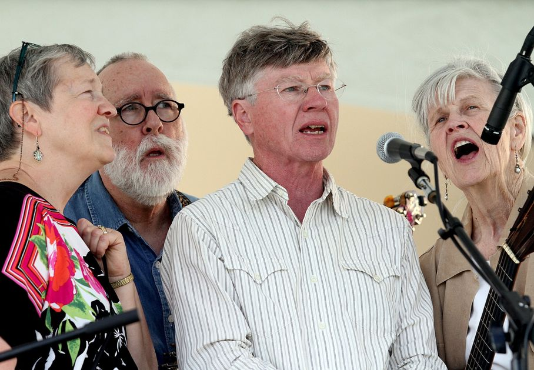
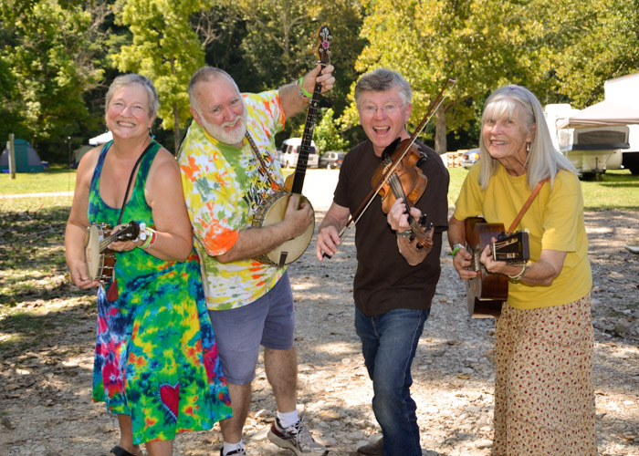

Rabbit Hash String Band
 Photo by E. L. Hubbard, Hamilton Journal News, 2013
“Just two hops and a jump” from the Ohio River and not a “fur piece” from Cincinnati is Rabbit Hash, Kentucky, where the Rabbit Hash String Band got their start a-pickin’ tunes. Rabbit Hash String Band features the fine fiddling of Warren Waldron paired to the masterful clawhammer banjo playing of Russ Childers. Judy Waldron and Barb Childers drive the tempo on guitar and banjo uke. The band plays concerts, calls traditional square dances, belts out old-time harmonies, and shares a tall tale or two along the way. Because any time spent with the Rabbit Hash String Band is a good time, you’ll want to take a trip “home” with their fun-loving music.
Rabbit Hash, Kentucky, is where I want to be; cornbread, molasses, and sassafras tea…
Audio and Video Samples
Where I Want to Be - Rabbit Hash String Band’s latest CD
Visit us on Facebook!
Links to YouTube videos:
Cotton Eyed Joe - 2011 Red Barn Radio, Lexington Kentucky
Hand Me Down My Walking Cane - 2011 Red Barn Radio, Lexington Kentucky
Sandy River Belle - 2011 Red Barn Radio, Lexington Kentucky
Old Lonesome Blues - 2011 Red Barn Radio, Lexington Kentucky
Rabbit in the Lowland; Arkansas Traveler; Rock the Cradle Joe; 2013 Appalachian Festival, Cincinnati Ohio
 Photo by Bill Kuertz, 2013